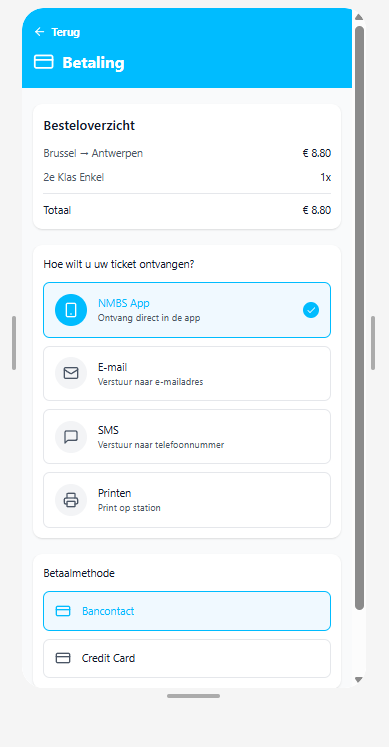
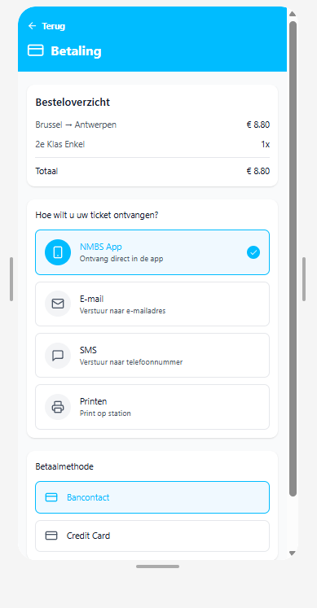

Startproces Interactieve schermen
In week 10 heb ik gewerkt aan het ontwerpen van interactieve treinschermen in Figma. Hierbij heb ik verschillende schermen uitgewerkt die gebruikers een realistische ervaring van het treinsysteem geven. Door interactieve componenten en knoppen toe te voegen, kon ik het ontwerp laten reageren op gebruikersacties, zoals het selecteren van bestemmingen of het bekijken van dienstregelingen. Tijdens het proces heb ik actief geluisterd naar de feedback van de leerkracht. Hierdoor heb ik verbeteringen doorgevoerd op het gebied van: Kleurcontrast: zodat tekst en achtergrond duidelijk zichtbaar zijn voor iedereen. Typografie: lettertypes en groottes aangepast om de leesbaarheid te verbeteren. Algemene gebruiksvriendelijkheid: navigatie en interacties logischer en intuïtiever gemaakt. Door deze feedback te verwerken, zijn de interactieve treinschermen professioneler en gebruiksvriendelijker geworden, en sluiten ze beter aan bij de beoogde gebruikerservaring.


 
